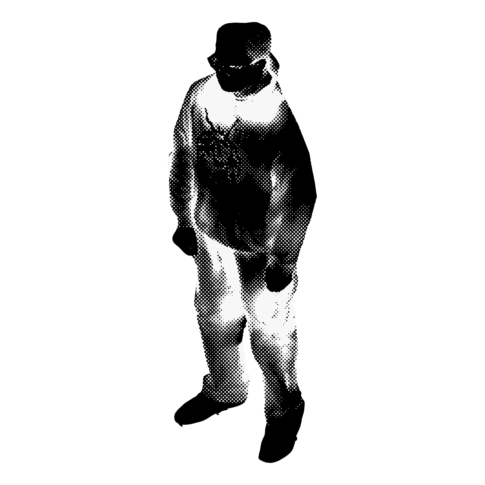

Contact
marioramirezarrazola.com
marioramirezarrazola@gmail.com
+1 801 - 833 - 2752
Salt Lake City, UT | Los Angeles, CA
Education
Columbia University GSAPP
2023 — 2026
University of Oklahoma
2021 — 2023
University of Utah
2018 — 2021
Experience
Gensler
July 2026 — Present
WaCa Design
January 2026 — July 2026
Assisted principal Walter Cain in the design and
renovation of a historic estate located in Palisades,
New York through the production of exterior and
interior renderings for the client, 3D digital and
physical modeling, and concept iteration.
Montclair State University
2023 — 2026
Adjunct for the History Department, primarily teaching
courses in Introduction to American Studies, Colonial
American History, and Modern American History.
Developed course materials, delivered lectures, and
facilitated classroom discussions focused on critical
analysis of historical events and their broader social
contexts. I made it an effort to train my students in
methods of historical analysis beyond writing through
exercises in collaging, graphic design, photography,
and digital fabrication.
Office DFK
Summer 2024
As an intern at Office DFK I worked on developing
architectural drawings in the form of highly detailed
plans, sections, and elevations, rendered and developed
3D models for design competitions, and finished a
1/4” = 1’ physical design model.
Skills
Design & Tech:
Rhino 8, Revit, AutoCad, Grasshopper, VRay, Blender,
Twinmotion, Adobe Suite (Illustrator, Photoshop,
InDesign, Premiere), AI-Integrated Workflows
Fabrication:
Laser cutting, CNC milling, 3D printing, physical modeling
Methods:
Concept ideation, sketching, writing, researching,
collaging, vibe coding
Leadership
Founder, Non-Background at GSAPP
Student Council President, Columbia University GSAPP
Chair, GSAPP Health and Wellness Committee
Mentor, Barnard + Columbia Architecture Society
Editor, Aster Review, University of Oklahoma
Representative, History of Science Association at OU
Educational Volunteer Member, AmeriCorps
Historian, Latinos in Action at the University of Utah
Board Chair, Associated Students of the University of Utah
Publications
"Nomadic Pedagogy and the Writing Center,"
Another Word, University of Wisconsin–Madison
"Oklahoma Psychogeography 1 & 2,"
The Aster Review, University of Oklahoma (Vol. 5)
"The Bullet Train of Camden,"
Plutonics: A Journal of Non-Standard Theory
(Vol. 15)
"Borderlands of Zoom University,"
The Dangling Modifier, Penn State University
"The Economics Benefits and Implications of Insuring
All Utah Children,"
Univ of Utah Undergraduate Research Journal
(Vol. 21)
"Adding Up The Cost of Excluding Undocumented Utahns
From State And Federal COVID-19 Relief,"
Univ of Utah Undergraduate Research Journal
(Vol. 20)
Conferences
"Infrastructural Madness in Allan Sekula’s Fish Story,"
Society for the History of Technology 2023 Annual
Conference, Long Beach, CA
"Towards a Writing Center Pedagogy of Place, Power,
and Persons," South Central Writing Centers
Association, Baton Rouge, LA
"The Gothic Flatline and Infrastructure Studies,"
Southwest Popular American Culture Association
43rd Conference, Albuquerque, NM
"Adding Up The Cost of Excluding Undocumented Utahns
from State and Federal COVID-19 Relief,"
Univ of Utah, Research on Capitol Hill (ROCH)
"Adding Up The Cost of Excluding Undocumented Utahns
from State and Federal COVID-19 Relief,"
BYU, Utah Conference on Undergraduate Research
"Adding Up The Cost of Excluding Undocumented Utahns
from State and Federal COVID-19 Relief,"
Univ of Utah, Immunology, Inflammation, &
Infectious Disease (3i) Initiative
"The Economic Benefits and Implications of Insuring
All Utah Children,"
Univ of Utah, CSBS Virtual Student Research Day Conference
Awards & Grants
Master of Architecture Program Scholarship (2023)
Marilyn B. Ogilvie Graduate Fellowship (2) (2022, 2023)
History of Science Travel & Research Award (2022)
National Conference on Peer Tutoring in Writing Travel Award (2022)
Robert E. and Mary B. Sturgis Scholarship (2022)
College of Arts and Sciences Travel Assistance Program Grant (2022)
Robberson and Wethington Prestigious Course Grant (2022)
Dodge Family College of Arts & Sciences Scholarship (2022)
SLIS Scholarship (2022)
Writing Center Travel Grant (2021)
Robberson Travel Grant (2021)
Segal AmeriCorps Education Award (2021)
Undergraduate Research Scholar Designation (2021)
2021 CSBS Student Research Day Student Choice Award (2021)
Stephen and Lynda Jacobsen Scholarship (2021)
Economics Department Scholar (2020)
Kem C. Gardner Policy Institute Scholar (2020)
Jewel J. and Larue J. Rasmussen Scholarship (2020)
University of Utah Undergraduate Research Office Grant (2020)
Beacon Community Engagement Award (2020)
Informed Decisions Scholarship (2) (2019, 2021)
Economic Ambassador Scholarship (2) (2019, 2021)
Utah Early Graduate Scholarship (2018)
Interests
theory and history / writing / representation /
material systems / urbanism / fabrication /
photography / pedagogy / contemporary art